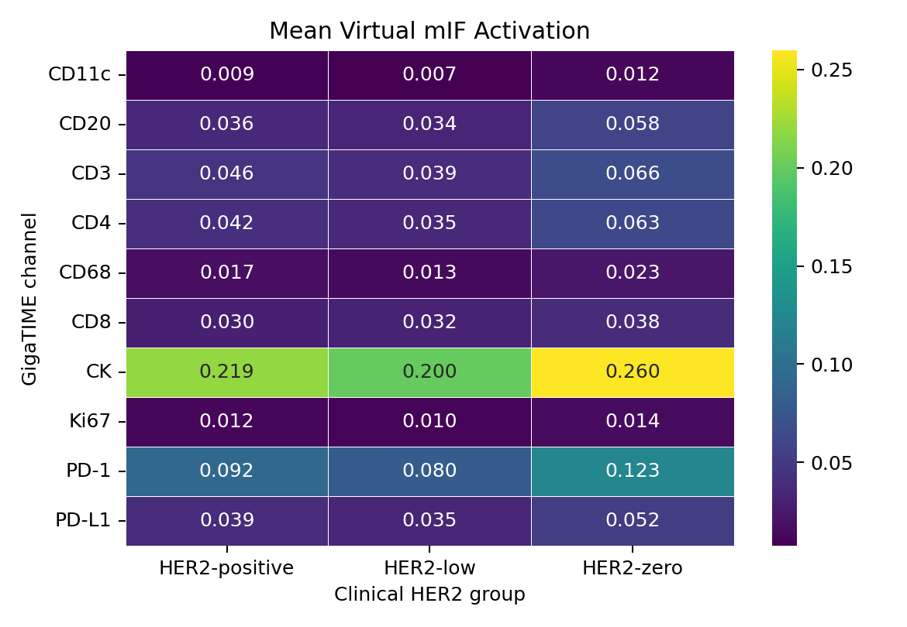
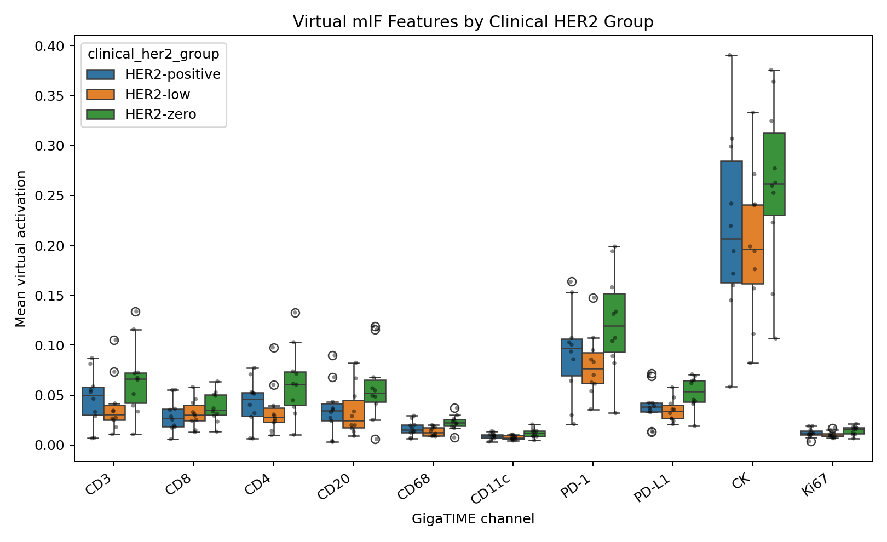
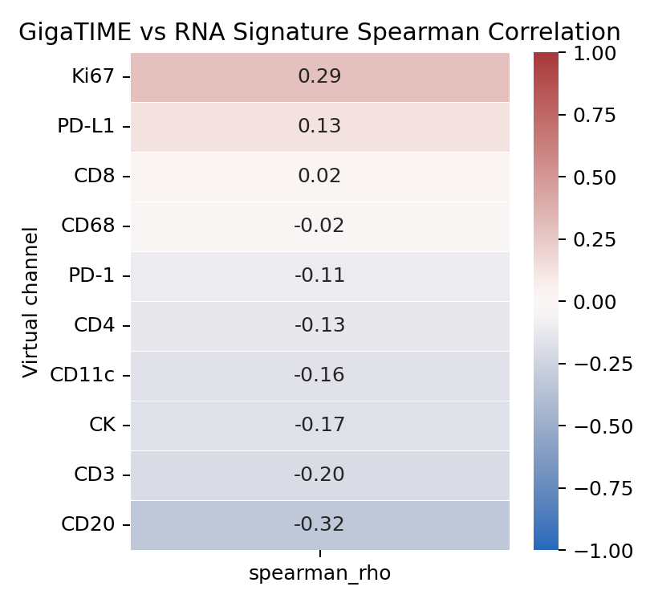

Clinical HER2 GigaTIME Findings
Simple summary of the TCGA-BRCA pilot so far: 30 slides, three clinical HER2 groups, GigaTIME virtual mIF outputs, RNA validation, and visual QC.
Bottom Line
Main signal: HER2-zero had higher GigaTIME-predicted immune/checkpoint-like signal than HER2-low, especially CD68, PD-L1, and CD11c.
Important caution: RNA validation was weak, and the pairwise tests did not survive multiple-testing correction. This is a proposal-ready hypothesis, not a validated biological claim.
Study Design
- Dataset: TCGA-BRCA breast cancer.
- Groups: 10 HER2-positive, 10 HER2-low, and 10 HER2-zero cases.
- Input: diagnostic H&E whole-slide images.
- Model: released GigaTIME virtual mIF model.
- Sampling: 64 random tissue tiles per slide.
Top Three-Group Differences
| Channel | Kruskal p | BH q | Highest group | Lowest group | Max-min mean |
|---|---|---|---|---|---|
| CD68 | 0.0242 | 0.1647 | HER2-zero | HER2-low | 0.0091 |
| PD-L1 | 0.0423 | 0.1647 | HER2-zero | HER2-low | 0.0175 |
| CD11c | 0.0494 | 0.1647 | HER2-zero | HER2-low | 0.0045 |
| CD4 | 0.0794 | 0.1722 | HER2-zero | HER2-low | 0.0274 |
| Ki67 | 0.0920 | 0.1722 | HER2-zero | HER2-low | 0.0042 |
| PD-1 | 0.1033 | 0.1722 | HER2-zero | HER2-low | 0.0428 |
| CD20 | 0.1466 | 0.2094 | HER2-zero | HER2-low | 0.0245 |
| CD3 | 0.1876 | 0.2345 | HER2-zero | HER2-low | 0.0266 |
Group-Level Virtual mIF Summary
This heatmap summarizes mean virtual-channel activation by clinical HER2 group.

Channel Distributions
Each dot is one TCGA case. The spread shows why this remains a pilot.

Top Pairwise Tests
| Channel | Comparison | Delta mean | Mann-Whitney p | BH q |
|---|---|---|---|---|
| CD68 | HER2-low vs HER2-zero | -0.0091 | 0.0091 | 0.2113 |
| CD11c | HER2-low vs HER2-zero | -0.0045 | 0.0173 | 0.2113 |
| PD-L1 | HER2-low vs HER2-zero | -0.0175 | 0.0211 | 0.2113 |
| CD4 | HER2-low vs HER2-zero | -0.0274 | 0.0312 | 0.2258 |
| Ki67 | HER2-low vs HER2-zero | -0.0042 | 0.0376 | 0.2258 |
| PD-1 | HER2-low vs HER2-zero | -0.0428 | 0.0539 | 0.2695 |
The strongest pairwise tests were mostly HER2-low versus HER2-zero, but none were FDR-significant.
RNA Validation
We compared virtual channels with matched RNA-seq marker signatures. No channel was FDR-significant.
| Channel | Spearman rho | p | BH q |
|---|---|---|---|
| Ki67 | 0.294 | 0.1144 | 0.5719 |
| PD-L1 | 0.127 | 0.5020 | 0.7215 |
| CD8 | 0.019 | 0.9191 | 0.9284 |
| CD68 | -0.017 | 0.9284 | 0.9284 |
| PD-1 | -0.105 | 0.5800 | 0.7250 |
| CD4 | -0.127 | 0.5051 | 0.7215 |
| CD11c | -0.157 | 0.4078 | 0.7215 |
| CK | -0.168 | 0.3737 | 0.7215 |
| CD3 | -0.198 | 0.2937 | 0.7215 |
| CD20 | -0.325 | 0.0801 | 0.5719 |

Visual QC
Top cases were selected by combined CD68 + PD-L1 + CD11c virtual signal.
| Group | Case | Combined | CD68 | PD-L1 | CD11c |
|---|---|---|---|---|---|
| HER2-positive | TCGA-A2-A0EQ | 0.115 | 0.029 | 0.072 | 0.014 |
| HER2-low | TCGA-A2-A04Q | 0.086 | 0.018 | 0.058 | 0.010 |
| HER2-zero | TCGA-A2-A0T2 | 0.126 | 0.037 | 0.069 | 0.021 |
The high-scoring tiles contain tissue and cells rather than obvious blank background. This supports follow-up, but it is not biological validation.
Example QC Panels
HER2-zero

HER2-low

HER2-positive

What To Say
- We completed the balanced 30-case clinical HER2 pilot.
- The leading signal is HER2-zero greater than HER2-low for virtual CD68, PD-L1, and CD11c.
- Visual QC makes the signal look plausible enough to follow.
- RNA validation did not confirm the signal strongly, so the claim must stay cautious.
Next Step
Rerun the same 30 slides with denser tile sampling, such as 256 or 512 tiles per slide. Then repeat the clinical HER2 summary, RNA validation, and visual QC.
Proposal framing: GigaTIME produced a plausible but unvalidated virtual immune/checkpoint signal separating HER2-zero from HER2-low in a balanced TCGA-BRCA pilot, motivating deeper sampling and orthogonal validation.